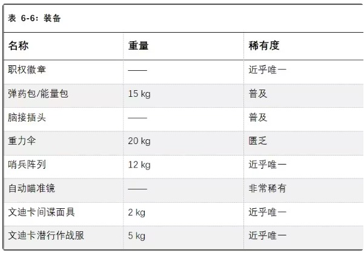
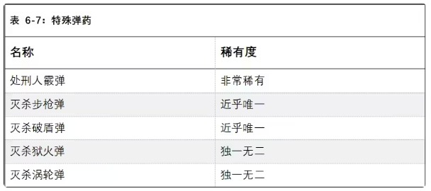
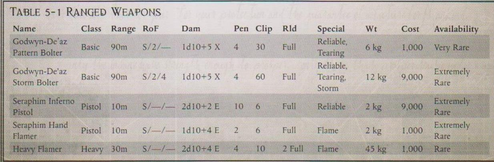
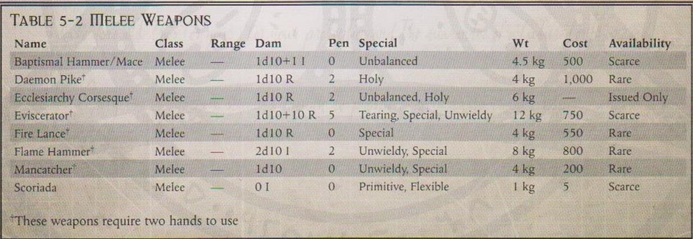

文迪卡间谍面具是一种系统极为先进精密的装备，专门配发给文迪卡刺客。据传，即便是火星的技术神甫，也难以通晓文迪卡间谍面具的设计原理。文迪卡间谍面具内置存储仓，装有压缩食物和水，可支持文迪卡刺客的长时间行动，还配备了多频道的通讯传感器（包括语音和图像），用于监听敌方通讯。文迪卡间谍木庵聚最主要的特征是那副广谱目镜，能在极远的距离上识别热源和能量源。
文迪卡间谍面具还整合了“扫描仪”、先进的高品质“多功能望远镜”、优秀品质的“成像面罩”（能为使用者提供“黑暗视觉”特性，并免疫闪光手雷的效果）、图像记录仪、循环呼吸器和通讯器。此外，若任何基于感知的检定失败，使用者可重骰一次。当使用者射击被伪装迷彩保护的目标时，不会受到射程修正的影响。
需要注意，文迪卡刺客的装备通常经过基因编码，仅适配特定个体，若要为其他使用者调整基因编码，需付出巨大努力，必须通过一次艰巨（-30）的技术应用与医疗检定。
文迪卡潜行作战服的外观为黯黑色的紧身衣，专为刺客个人量身定制。文迪卡神庙与机械神教长期合作，打造这些精良的作战服。每件作战服都紧密结合了卡梅莱林迷彩材料与复杂的“合成皮肤”。作战服的材料与刺客的身体相贴合，既能增强刺客的反应速度，也能保护他免受毒素、气体及其他战场危险的伤害。每件作战服都柔韧、轻盈，在不阻碍刺客行动的同时，又能不失防护性能。
文迪卡潜行作战服不能穿在任何护甲内。它能为所有身体部位提供 3 点护甲值，并整合了合成皮肤的所有增益。潜行作战服能让使用者的闪避检定和抵抗毒素的坚韧检定获得+10 加成，躲藏与潜行检定获得+20 加值。使用者可用部分动作进行躲藏检定，而非常规的完整动作。即便众目睽睽下，使用者也能尝试检定。若使用者静止不动，则所有针对他的远程攻击在计算射程时都要上升一个等级。潜行作战服能让使用者避开“黑暗视觉”特性、猎物感知（preysense）以及各类红外传感器的探测。文迪卡潜行作战服为极品品质。
需要注意，文迪卡刺客的装备通常经过基因编码，仅适配特定个体，若要为其他使用者调整基因编码，需付出巨大努力，必须通过一次艰巨（-30）的技术应用与医疗检定。

以下是王座特工经常获取并使用的几种特殊弹药。
这种稀有的特制霰弹内置微型推进器与稳定系统，能锁定并追踪目标，通常仅限有帝国高层可以使用，如法务部的仲裁官以及“惩戒官”（Castigator）“告亡官”（Mortiurge）等重要成员。这一霰弹的机械原理鲜为人知且极难复刻，只有那些为法务部提供合法军械的军务贤者（Magos Munitorium）知晓。
效果：武器失去 “散射”特性，但基础伤害+4、基础破甲+1。在近距离或标准距离射击时，使用者可重掷失败的 BS 检定，且无视目标所处掩体的护甲值。使用处刑人霰弹时，武器不得进行半自动或全自动射击。
适用武器：霰弹枪、自动霰弹枪、战斗霰弹枪。
所有灭杀弹药（包括特殊弹头）均内置微型沉思者与瞄准机魂，使灭杀弹药几乎无法被闪避。任何针对灭杀步枪或灭杀手枪攻击的闪避检定都将受到-20 的惩罚。
灭杀弹药还可设定为自毁模式。弹头仿佛被病毒感染般分解殆尽，不留任何痕迹。
文迪卡刺客执行任务时，通常会配备一套特殊弹药。这些特制弹头极为稀有，每一枚的制作都耗时耗力。因此，每种特制弹头通常只会被配发一枚给文迪卡刺客，偶尔也会配发其他特殊弹头（如次膦基燃烧弹【hyphosphus incendiaries】）作为替代。
下文所述弹药仅能由灭杀步枪和灭杀手枪使用。
这种弹头经过特殊处理，带有灵能刻印，内部装载的复杂电路采用了反相位技术，即便是机械神教，也难以通晓其原理。
效果：该弹药无视“恶魔”特性、以及任何灵能防护以及立场防护。当弹头击中使用防护性灵能和/或带有立场装置的目标时，他的灵能和/或立场将停止运作 1 回合。
灭杀狱火弹能对有机物质造成毁灭性的打击。这种弹药的核心装有一管突变酸，当弹头撞击目标时，数千枚穿甲微针会将这种酸注入目标体内，以可怕的速度腐蚀血肉与金属。

效果：武器造成+1d10 点伤害，获得“撕裂”特性。且任何伤害骰掷出 9 或 10 时均可触发“正义之怒”。
灭杀涡轮弹是一种超高速弹头，外壳以精金制成，内部包裹一枚特殊的镍锰熔针（magno-sealed flux needle）。这类特殊弹头的知名之处就是它几乎能穿透任何护甲的能力，对目标造成严重破坏。当超高速弹头穿过目标分子结构时，还会产生二次破坏。
效果：武器造成+2d10 点伤害，破甲+5。此外，武器无视目标因“超自然坚韧”获得的坚韧加值（但不无视“恶魔”特性及相关坚韧加值）。
等离子切割器是一种重型工业工具，其设计初衷是利用聚焦的灼热火花切割厚重的金属与陶钢板。后来，技术神甫发现，等离子切割器能很好地帮助他们履行职责，因此便将等离子切割器安装在经过改装的机械附肢上。在危急情况下，等离子切割器还可通过过载方式充当临时却致命的武器。
等离子切割附肢由光子氢（photonic hydrogen）储存罐供能，每分钟可切割长度 1 米、厚度 20 厘米的精金板（在切割较薄的材料时速度更快）。此外，配备等离子切割附肢的机械神甫可将功率提升至安全阈值之上，将其用作武器。
在战斗中，机械神甫可以用本回合的反射动作，使用这条机械附肢发动攻击，或在自己的回合中以部分动作使用机械附肢发动攻击（但等离子切割附肢每回合仅能发动一次攻击）。作为武器使用时，等离子切割附肢相当于 “瑞扎型等离子手枪”，射程为 10 米，且无“过载”射击选项。
等离子切割附肢在切割状态下可运行 20 分钟，或射击 40 次，之后需要重新加注燃料。等离子切割附肢适用于“机械附肢使用（多功能）”、“机械附肢使用（枪械）” 天赋。
一些技术神甫，例如帝国卫队的工造士，经常要与重型机械或其他体型庞大的装置打交道，搬运和操控远超肉体凡胎所能承受的沉重机械。因此，这些技术神甫常会在自己的机械外壳上安装伺服臂。
伺服臂是起重附肢的强化版本，二者虽均为肩部挂载，功能相近，但伺服臂构造更为精密，还配备有贯穿技术神甫全身的稳定与支撑系统。装配伺服臂（以及相应的稳定与支撑系统）的技术神甫可以将犀牛装甲运兵车的一侧抬起，以便修理损坏的履带。
伺服臂是一种肩部挂载的机械附肢，可延伸至 1.5 米长。当使用伺服臂时，技术神甫会应用该伺服臂提供的 65 力量，且附带超自然力量（x2），影响技术神甫自身力量的装置或能力不会影响伺服臂的力量属性。伺服臂配备有可以抓握与挤压的钳爪或颚部，能让技术神甫拾取并举起重物，或是用自由动作将自己固定在合适的锚点上。此外，伺服臂也能作为一种临时使用的致命武器。机械神甫可以用本回合的反射动作，使用这条机械附肢发动攻击，或在自己的回合中以部分动作使用机械附肢发动攻击（但该机械附肢每回合仅能发动一次攻击）。命中检定应用技术神甫的武器技能，但带有-10 的惩罚，可以造成 2d10+12 的冲击伤害，破甲为 2。
伺服臂适用于“机械附肢使用（多功能）” 天赋。
【译者：白日铸炉、红达貘、浣熊旅记、维维豆糕】
这些受人尊敬的武器是专为战斗修女会设计的，并得到了修会中大修女（Canonesses）的祝福，每一位修女在正式成为战斗修女时都会被授予一把戈德温·迪亚兹型爆弹枪。并且修女会将这些尊崇的武器当作神圣遗物崇敬；每件武器都有专门的侍者和值得信赖的仆人精心维护。这种型号的爆弹枪对战斗修女会意义重大，它不仅是对抗人类敌人的强大武器，也象征着皇帝的审判和修女的虔诚信仰。
国教使用的风暴爆弹枪与王座特工使用的武器并无太大区别。这种武器需要双手操作，本质上就是两支爆弹枪一同开火，可以更快地向敌人倾泻出爆弹。这种武器的弹药消耗率很高，因此在很多情况下都不实用，但很少有人会质疑这种强大的信仰象征所能带来的效果。
致命的地狱手枪可以烧穿最坚固的建筑或装甲。众所周知，如果一把武器可以做到这一点，那么两把武器就会事半功倍。炽天使地狱手枪设计成一对，受过专门训练的炽天使可以在近战中使用它们。拥有双重射击天赋的角色可以同时使用两把武器同时进行单发射击，它们的伤害增加 1d10，并且武器的穿甲翻倍。
炽天使喷火手枪专为成对使用而设计，可同时从两支手枪中喷出火焰。此外，喷火手枪还可用于近战，并能释放小型的火焰爆裂，其钷素的消耗量可忽略不计。经过适当训练的人可以将这种武器用作远程武器和近战武器。拥有双重射击天赋的角色可以使用两把武器攻击。两支喷火手枪的弹药都会消耗，但攻击会造成 1d10 +10 伤害，并且目标在躲避火焰的检定中敏捷受到-20 的减值。此外，该武器还可用于在近战中攻击单个目标，而无需消耗弹药，但 gm 可能会规定在长时间战斗中使用一些弹药。
这种巨大而且沉重的武器一般需要两个人共同使用，一个人负责拿着喷火器进行瞄准，而另一个人则满怀狂热地抱着一桶作为弹药的钷素。力量大于等于 40 或者穿着动力甲的角色可以一个人扛起燃料罐并且操作喷火器。重型喷火器设计出来就是为了在一次射击后焚灭一大群敌人的。如果重型喷火器使用了祝圣弹药（详见审判官手册） ，那么它对灵能者或者恶魔造成的正义之怒会自动成功。

洗礼之锤有许多俗称（如“受膏战锤”），它将沉重的锤头与锤柄中的装满腐蚀性液体的罐子结合在了一起。当武器撞击目标时，液体就会释放出来，腐蚀目标已经被锤头砸的皮开肉绽的肉体。对于卡利西斯星区国教中的一些人来说，它们是权威的象征。这种武器的设计有各种样式，包括战锤、页锤和钉头锤，并且单手和双手都有。洗礼之锤具有“淬毒”特质，也可以在武器的储液槽中注入钷元素，并在锤柄上添加点火器。被这样改造过的武器击中的目标必须进行敏捷检定以避免被点燃（见核心规则书中特殊伤害部分） 。
这些武器的长度从三米到四米不等（有时更长）。退魔长矛在空心钢管上装上了精金制的银刃矛尖，它们的重量太大，因此无法投掷。相反，它们常用来击退恶魔，变种人或者其他亚空间邪秽的冲锋。退魔长矛的矛尖和矛杆上刻有带有驱魔功能的祷文或者圣言，而矛头下方一米长的矛杆上则镶嵌着短短的指向前方的尖刺，最后在矛尖处变成成两条阔刃。这些阔刃有两个作用——它们可以防止持枪者将武器刺入敌人体内太深，并防止恶魔和其他生物顺着矛杆前进攻击使用者。镌刻的祷文，以及涂抹的圣水和圣油，使退魔长矛成为了“神圣”武器，使它在对抗恶魔和亚空间实体时更为有效（这把武器具有神圣特性）。
国教中有些成员把国教权杖当成国教权威的象征，国教权杖有一个国教徽记形状的锤头，并且被设计成了打击异端和变种人的武器。徽记的边缘锋利无比，并且在边缘延伸出了几个可以穿透盔甲的长钉。这种经过祝福和洗礼的权杖是卡利西斯星区的牧师们最喜爱的力量和权威的象征之一。这种武器无法购买，必须专门为个人打造，而持有者必须在国教中拥有足够的地位才能拥有这种武器。拥有权杖的人往往只会在极少数情况下（如在重大战役或远征中）使用它们，但是每当他们必须挥舞这种武器时，他们绝对会冲锋在前。
由于其锻造的性质，所有国教权杖都是“神圣”武器，使它在对抗恶魔和亚空间实体时更为有效。（这把武器具有神圣特性）
受到国教狂热分子和女巫猎人青睐的裂人锯是一种大得吓人的双手链锯武器，它配备了一种较为简陋，但是常见于

动力武器上的分解力场发生器。虽然非常笨重，使用起来也很累，但是它可以将着甲敌人字面意思的一刀两段，或者轻松撕碎那些最亵渎的变种人。任何人在使用裂人锯进行攻击的时候如果扔出 96-100，则意味着使用者失去了对咆哮着的链锯的控制，除非通过一次敏捷检定，否则裂人锯会像命中它的敌人一样命中它的使用者。 （即正常应用一切穿甲数值和伤害加值）
对于那些必须在不杀死目标的情况下迅速将其制服的侍僧们来说，捕人器很受他们的欢迎，这是是一种末端装有收紧装置的杆状武器。有的是简单的铁索圈，可以勒住脖子；有的设计更为复杂，包括带有数十根尖刺的铁圈。使用者可以对任何被该武器击中的人形对手进行武器技能检定，但会受到 -20 的惩罚，如果检定成功则对手会被束缚。如果目标想要移动，就必须与使用者进行力量对抗武器技能的对抗检定，以成功挣脱束缚。如果目标失败，则无法移动，如果成功，则已挣脱束缚，可以正常移动。目标也可以进行柔术检定，如果成功，则挣脱束缚。（译者吐槽：这东西怎么看怎么像中古里斯卡文驯兽师的武器，）
苦修鞭是用打结的布条或软皮制成的鞭子。它们用于对自己或他人进行体罚。虽然苦修鞭本身几乎不会造成伤害，但长时间使用会造成严重的瘀伤和伤口。当苦修鞭用作武器时，只会造成相当于角色力量加值的伤害。当拥有苦修者天赋（见核心规则书）的角色使用它进行每日鞭笞时，该角色可以进行一次难度为艰难（-10）的坚韧检定，如果成功，他们就不会因为使用苦修者天赋而受伤。
火焰长枪和火焰战锤是启明教堂（Cathedral of Illumination）的守卫在惩戒邪秽时使用的奇特武器。少量的钷素可以加热这些武器的刃口或矛尖，在攻击时蒸发目标的血液。武器上还装有一个装置，可以将火焰喷射出来，彰显帝皇的神圣意志。这些武器造成的伤害会忽略目标 3 点坚韧加值（先计算超自然坚韧等修正值） 。此外，该武器还会烧灼所造成的伤口。因此该武器造成的任何持续流血效果都会被忽略。该武器还可以作为火焰喷射器发射一次（之后需要补充燃料）。一旦这样做了，它就不再加热武器，也不再忽略目标的韧性或烧灼伤口，直到重新装填燃料为止。（译者注，火焰武器的原文出自 heresy-begets-retribution-low-res，作为对忠烈之血中漏掉的补充。）
《忠烈之血》 P117-121
“我的信仰就是我的盾。”
——侍僧 亚萨尔·凯（Yasar Ky）
教会仆人们的护甲不仅来自于对神皇的信仰，还来自祂为他们提供的受祝的道具，从简单的教袍到修女的标志性护甲， 神皇的甲胄保卫着那些捍卫人类的人。
这些短袍由粗布织成、在圣水中洗涤，再由高级牧师祝圣，可在一定程度上抵御爪子、刀具等伤害（几乎无法抵御先进武器的攻击），但在面对超自然力量时， 才会真正体现它的价值。当穿戴者在抵抗任何灵能的直接攻击或控制时， 受祝粗布短袍为检定提供 +10 的加值。 在抵御直接造成伤害的灵能力量或亚空间能量攻击、以及亚空间武器时，受祝粗布短袍提供全额护甲。受祝粗布短袍可以单独穿戴，也可以穿在其他护甲内。如果单独穿戴，会有点痒和不舒服，但不会有什么大问题。但是，如果穿在其他护甲下面，就会引起强烈的刺激。如果穿戴时间超过坚韧加值的小时数，则必须进行坚韧检定，否则会承受 1 级虚弱。
上衬由大量经国教批准的圣像、镌刻的祷文、格言和纯洁印记组成，可应用于任何普通护甲。除了标记佩戴者是神皇虔诚的追随者外，当角色试图激励、领导和团结信徒时，还能在指挥和吸引力检定中获得 +10 的加值。
医疗修女经常在战区服役， 相比起其他非军事修会成员， 她们需要更多的保护。这身与众不同的护甲是受伤的卫队士兵和侍僧们的最爱，是神皇亲自派来的仁慈天使。除了它的保护特性外，带兜帽的袍子上还经常涂有熏香和药膏， 护甲的其他部分也经过密封和防毒处理。这使穿戴者在抵抗毒素或无法穿透护甲的疾病（如毒镖）时获得 +20 加值，在任何带有嗅觉成分的恐惧检定（如腐烂的尸体）中获得 +10 加值。
这些盾牌由一层层的塑钢复合材料和陶钢构成，据说包含了帝皇最初穿的护甲的小碎片。 它们只出现在修女会成员中，即使这样， 也只颁发给那些擅长（并喜欢参与） 近战攻击的修女。由于圣灵护盾的重量，它只能由穿着修女动力甲的修女使用。它允许玩家花费一个反射动作，使用角色的武器技能招架攻击（包括远程武器攻击）。然而，修女只能招架来自前方或侧面的攻击（右侧或左侧，取决于护盾在哪只手上）。对于近战攻击，圣灵护盾的招架效果与普通招架效果相同，如果招架成功，它会提供额外的 8 AP。 这是动力甲本身提供的 AP 之外的额外 AP。虽然使用圣灵护盾意味着战斗修女只能使用单手武器，但她可以在近战中使用护盾。如果命中，它会造成 ld5+2 I 伤害（加上她的力量加成）。
经过精心制作（以及不菲价格）， 圣化甲壳甲的每层甲片上都刻有祷文，每块主要部件（如头盔边缘或胸甲边缘）都有额外的祷文和咒语，胸甲中央和四肢上还镶嵌有巨大的神圣符号。最后，整套护甲都要经过祝福，接着涂上神圣的机油。一旦完成， 圣化甲壳甲就会为穿戴者带来大量的保护性益处。首先，它能在抵抗任何直接的灵能攻击或操纵时提供 +10 的加成。 此外，在抵御直接造成伤害的灵能力量或亚空间能量攻击、以
及亚空间武器时，圣化甲壳甲提供全额护甲。 使用甲壳甲的护手进行的攻击被视有神圣特性，会对某些恶魔生物和亚空间实体产生额外的特定效果（将在其描述中注明）。最后， 护甲的神圣属性会赋予它纯洁的光环，使 20 米内的所有超自然生物在意志检定中受到-10 的惩罚。
与圣化甲壳甲的概念类似，圣化链衣的每个环上都刻有祷文。这些环被小心翼翼地铆接在一起，形成一件坚固的护甲。最后，再用圣油和纯净沙的秘制混合物进行清洗，将外衣打磨得闪闪发光。 它常见于那些国教势力壮大的蛮荒世界， 通常作为礼物送给传道士， 面对直接造伤的灵能攻击、亚空间能量攻击、以及亚空间武器时，经过适当准备的圣化链衣能提供全额护甲值。
修女在未穿着众所周知的动力甲时， 通常会穿着盾袍。这是为虔诚学习和军事训练而设计的神圣网袍。 在传统上由担任辅助角色的非军事修会成员， 和接受修女会教导的见习生穿戴，而在战斗修女在维护动力甲或返回修女会时， 盾袍可作为辅助服装。摒弃普通服装，战斗修女通常只穿盾袍和动力甲。盾袍并不局限于修女会成员。参加战斗或为敌人带来信仰与火焰的神职人员也会穿上它们。这些长袍通常采用风格化设计， 详细绘制了圣人生平的图像， 或对单一教派意义重大的圣像。
这套护甲由高戈·范迪尔委托制造， 在范迪尔的遗物中，修女动力甲是唯一没有跟他脑袋一样被抛弃的东西。这种轻型动力甲最初是由火星上的铸造厂为修女会制造的，它能提供出色的防护并增强力量，同时几乎不会降低移动速度或敏捷性。该护甲使用与阿斯塔特修会类似的电源，除非损坏，否则不会耗尽能量。卡利西斯星区的战斗修女在证明自己之前通常不会获得头盔。修女动力甲可为使用者提供 +10 力量，头盔还包括一个集成瞄准器（+ 5 BS）、一个循环呼吸器和一个通信链接。 穿戴者使用重型武器可视为“架设”状态。
修女动力甲使用一个核聚变发电机背包，如果保养得当，可以永远保持动力。不过，动力装置也有可能受到损坏，从而阻碍甚至使动力甲失效。如果穿戴者的躯干背部受到致命伤，请参考动力装置临界效应表（正常重创效果除外）。 这个问题会一直持续，直到该装置通过挑战性（+0）技术应用检定进行修复。
| 结果 | 效果 |
|---|---|
| 不受影响 | 动力装置继续正常运行。 |
| 损坏 | 电力功率减弱，导致系统故障和移动困难。动力甲带来的所有益处（固有 AP 除外）都会丧失。所有物理行动都会受到 -10 的惩罚。基础移动速度降低 2。 |
| 无动力 | 动力甲完全停摆。穿戴者必须进行艰难（-20）的力量检定才能移动。如果通过了检定，他的基础移速仍然会降低到 1，并且所有物理行动都会受到 -20 的惩罚。 |